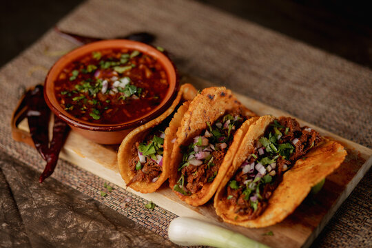

Ingredients:
For the birria (stewed meat):
- 2 lbs beef chuck roast (or short rib mix)
- 3 dried guajilo chillies
- 2 dried ancho chillies
- 2 dried passila chillies (optional, for depth)
- 3 cloves garlic
- 1 small white onion
- 1 tsp cumin
- 1 tsp dried oregano
- 1 tsp smoked paprika
- 1 bay leaf
- 1 cup beef broth (or water)
- 2 tbsp apple cider vinegar
- Salt & pepper to taste
For the tacos:
- Corn tortillas
- Chopped white onion & fresh cilantro
- Lime wedges
- Shredded cheese (Oaxaca or mozzarella)
Instructions:
Prep the chillies:
- Remove the stems and seeds from the dried chillies
- Toast them lightly on a dry pan for ~1 minute until fragrant
- Soak them in hot water for 15-20 minutes until soft
Make the birria sauce:
- Blend all the soaked chillies with some garlic, onion, cumin, oregano, smoked paprika, vinegar, and a bit of soaking liquid until smooth
Cook the meat:
- Cut the beef into large chunks
- In a pot or slow cooker, brown the meat lightly (optional but adds flavour)
- Add blended chillie sauce, bay leaf and broth
- Simmer on low heat for 2-3 hrs (or in a slow cooker for 6-8 hrs) until meat is super tender and shreddable
Shred the meat:
- Remove the meat from the pot, shred it, and return it to the sauce to soak up more flavour
Assemble tacos:
- Dip tortillas briefly in the birria sauce(consommé) for extra flavour
- Pan-fry on a hot skillet for 30-60 seconds per side
- Fill with shredded meat, cheese (if using), and top with onion & cilantro
- Serve with lime wedges and a small cup of consommé for dipping
Pro Tip: Street vendors often double-dip the tortillas in the consommé-this is what give them that juicy, flavourful exterior.